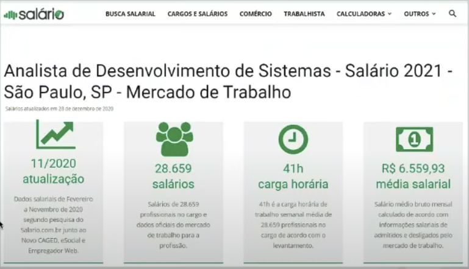
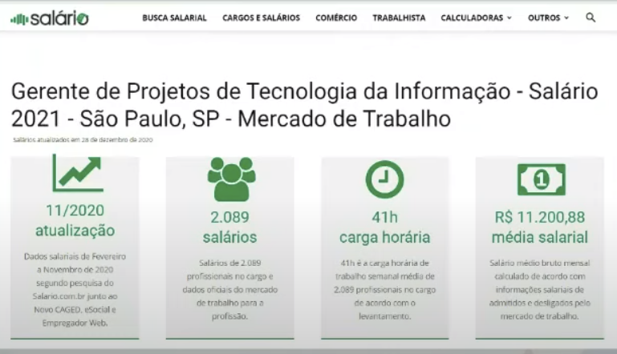

Disciplinas
-
Formação Profissional em Computação Concluído
Materiais
- Formação Profissional em Computação - Projeto de Desenvolvimento de Software, algoritmo.
-
Professor ministrante: Alessandra Alaniz Macedo
Conteúdo
Projeto de Desenvolvimento de Software, algoritmo.
Processo de Software.
- Os elementos do mundo real envolvidos no desenvolvimento e manutenção de um produto de software incluem recursos, ferramentas, atividades, artefatos e organização.
- Fases genéricas: definição, desenvolvimento e manutenção.
- Definição:
- É um conjunto de atividades para especificação, projeto, implementação e teste de software (SOMMERVILLE)
- Modelos de Processo de Software:
- É um representação abstrata de um processo.
- É a descrição de um processo a partir de uma perspectiva particular.
Ciclo de vida do projeto:
- Inicio do projeto.
- Organização e preparação.
- Execução do trabalho.
- Terminar o projeto.
Ciclo de Vida de Desenvolvimento.
- Preditivo.
- Interativo.
- Incremental.
- Adaptativos (ágeis).
- Híbrido.
Gerência de Projetos.
- Envolve planejamento, monitoramento e controle das pessoas e processos que ocorrem conforme evolui o desenvolvimento do software (produto).
Gerente de Projeto.
- Atua como um agente de mudança.
- Estabelece os objetivos do projeto e busca, por meio de um ambiente propício e de uma equipe motivada, alcança-lo dentro do prazo e do custo previamente estabelecidos.
- Deve estimular as habilidades dos integrantes da equipe e aperfeiçoar as formas de comunicação.
- É responsável por intermediar a comunicação, buscando sempre proteger a equipe e mantê-la unida, como um verdadeiro time.
Perfil do Gerente de Projeto.
- Graduação em Sistema de Informação ou Ciência da Computação.
- Pós-Graduação.
- Cursos complementares em Informática.
- Capacidade de Liderança.
- Eficiência na comunicação.
- Poder de negociação.
- Disciplina e organização.
- Persistência.
- Visão a longo prazo.
- Tomada de decisão.
- Desenvolver a equipe.
- Proatividade.
- Motivação e otimismo.
Analista de Sistemas $$.
Gerente de Projetos $$.
